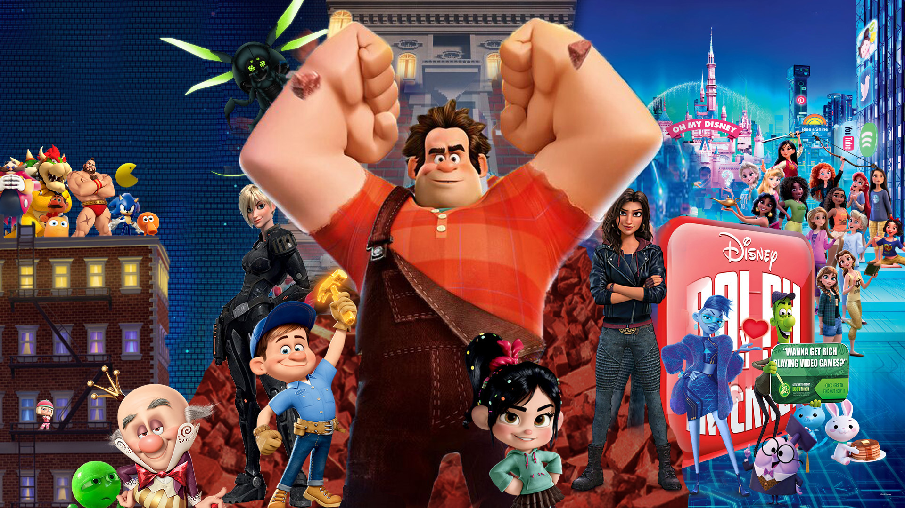

ABOUT RAPLH
Ralph is awesome! He is an 8-bit videogame bad guy who travels the length of the arcade to prove he is a good guy.
Ralph and his friends
Ralph's characteristics
- He's got big hands
- He's treated as bad-ass
- He's trying to be a good guy
Ralph's friends
Ralph has some awesome friends. I think his best friend is Vanellope von schweetz(Glitch). She's awesome. Clink on the links below to learn more about them: